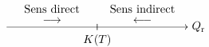

Définition :
Un système physico-chimique est défini par la donnée des constituants physico-chimiques qui
le composent. Un constituant physico-chimique est une espèce chimique caractérisée par sa
formule chimique et son état physique.
Les réactions chimiques ont lieu à l’échelle des espèces chimiques, de l’ordre du nanomètre.
À notre échelle macroscopique, on a besoin d’un outil pour dénombrer les espèces.
L’ancienne définition, qui n’est plus valide depuis novembre 2018, était la mole est la
quantité de matière d’un système contenant autant d’entités élémentaires qu’il y a d’atomes
dans \(0.012\,\rm{kg}\) de carbone 12.
Masse molaire d’un nucléide
La masse molaire d’un nucléide est la masse d’une mole du nucléide.
Par exemple, pour le silicium 28, sa masse molaire vaut \(M({}^{28}_{14}\rm{Si}) =
27.98\,\rm{g/mol} \approx 28\,\rm{g/mol}\).
Il s’agit environ du nombre de nucléon A du nucléide.
Masse molaire atomique d’un élément
La masse molaire atomique d’un élément est la masse d’une mole d’un élément en intégrant
les isotopes de celui-ci. Généralement, c’est la masse molaire qu’on trouve sur le tableau
périodique.
Masse molaire moléculaire
La masse molaire moléculaire est la masse molaire d’une molécule.
Volume molaire
Le volume molaire est le volume occupé par une mole, son unité est le \(\rm{L/mol}\). Cette
grandeur est surtout utile pour les gaz.
Dans le cas du gaz parfait, on verra que l’on a \(V_m = V/n = RT/p\), le volume molaire ne
dépend donc que de la température et de la pression. Sous les conditions standards
\(T = 273\,\rm{K}\) et \(p = 1\,\rm{bar}\), on a \(V_m \approx 22.4\,\rm{L/mol}\).
Corps purs et mélanges
Définition :
Un corps pur est un constituant unique caractérisé par une formule chimique définie.
Il peut être de deux type :
un corps pur simple s’il est composé d’un seul type d’élément
(\(\rm{Fe_{(s)}}\), \(\rm{Hg_{(l)}}\), \(\rm{Br_{2(l)}}\), \(\rm{O_{2(g)}}\), etc.)
un corps pur composé s’il est composé de plusieurs types d’éléments
(\(\rm{NaCl_{(s)}}\), \(\rm{H_2O_{(l)}}\), \(\rm{CO_{2(g)}}\), etc.)
Un mélange est un système physico-chimique constitué de plusieurs espèces chimiques.
La concentration
En chimie des solutions, généralement les espèces sont plongées dans une grande quantité de
solvant. Pour notre part, nous utiliserons toujours le solvant eau.
Définition :
Dans le cas d’une phase homogène, la concentration d’une espèce X est donnée par
$$
\quad \boxed{ c_X = [X] = \frac{n_X}{V} }
$$
avec \(n_X\) le nombre de moles de l’espèce et \(V\) le volume de la solution. Elle
s’exprime généralement pour les solutions en \(\rm{mol/L}\).
Dans le cas d’une espèce totalement dissoute dans l’eau, on parle d’espèce sous phase
aqueuse.
La notation \([X]\) est une notation standard de la concentration de l’espèce X.
Attention ! Cette notation n’a aucun sens pour l’eau (car on ne peut dissoudre de
l’eau dans l’eau) et pour un solide dans de l’eau (car il s’agit de deux phases distinctes).
La pression partielle d’un gaz
Lors d’un mélange de gaz, la concentration n’est pas l’outil adapté à la mesure des
quantités.
Définition :
La fraction molaire \(x_X\) de l’espèce X est le nombre de moles de cette espèce
\(n_X\) rapporté au nombre de moles total \(n_T\) soit :
$$
\quad \boxed{ x_X = \frac{n_X}{n_T} }
$$
Définition :
Pour un mélange de gaz, on définit la pression partielle \(p_i\) d’un gaz \(i\) comme
la pression qu’aurait l’échantillon si ce gaz était seul. On a :
$$
\quad \boxed{ p_i = x_i \times p }
$$
avec \(x_i\) la fraction molaire du gaz \(i\) et \(p\) la pression totale de l’échantillon.
Le réaction chimique
Les transformations chimiques
Définition :
Au cours d’une transformation chimique, il y a réorganisation des atomes au sein des
molécules. On observe la rupture et la formation de nouvelles liaisons entre les atomes.
Ceux-ci ne sont ni détruits, ni créés.
L’équation chimique
Une transformation chimique correspond au passage d’un système chimique d’un état initial
vers un état final. Cette transformation se note à l’aide d’une équation chimique bilan de
la forme :
$$
\quad \text{réactif} \rightarrow \text{produits}
$$
L’équation bilan traduit macroscopiquement la réorganisation de la matière, avec
conservation de tout élément. La réaction doit donc être équilibrée, il doit y avoir
le même nombre d’atomes de chaque éléments dans les réactifs et dans les produits.
Exemple :
$$
\quad \rm{NaCl_{(s)}} \rightarrow \rm{Na^+_{(aq)}} + \rm{Cl^-_{(aq)}}
$$
Définition :
On définit le nombre stœchiométrique \(\nu_X\) (ou coefficient stœchiométrique) d’un
élément X comme le nombre de fois où cet élément apparaît dans l’équation chimique. Il est
positif pour les produits et négatif pour les réactifs.
Ce nombre doit être pris le plus petit possible (entier ou éventuellement demi-entier).
Exemple :
Dans l’exemple du chlorure de sodium, on a \(\nu_{NaCl}=-1\), \(\nu_{Na^+}=+1\) et
\(\nu_{Cl^-}=+1\).
Le tableau d’avancement
Définition :
Le tableau d’avancement est l’outil central pour étudier une réaction chimique.
Il est composé de 3 ou 4 lignes, comprenant :
l’équation bilan
la composition du système en mole à l’état initial
la composition du système en mole à l’instant \(t\)
la composition du système en mole à l’instant final
Le tableau peut aussi être réalisé en concentration (\(\rm{mol/L}\)) lorsque tous les
produits et réactifs sont en solution dans le même volume.
Attention ! Dans la ligne de l’état initial, on met la quantité de moles qui a été
placée dans le réacteur chimique (souvent le bécher). Il n’y a aucune raison de faire
apparaître les nombres stœchiométrique dans cette ligne.
Définition : L’avancement (en mole) du système permet de caractériser le degré d’avancement de la
réaction entre son état final et son état initial. Il se note, au temps \(t\),
\(\xi(t)\).
La quantité de matière d’un élément X au temps \(t\) est donnée par
$$
\quad \boxed{ n_X(t) = n^0_X + \nu_X \xi(t) }
$$
avec \(n^0_X\) la quantité de matière initiale de l’élément et \(\nu_X\) le nombre
stœchiométrique de celui-ci.
Cette quantité de matière se comprend. Si on considère une réalisation de la réaction
chimique, c’est-à dire la rencontre du nombre exact d’atomes concernés, alors un nombre
d’atomes de produits correspondant aux nombres stœchiométrique vont apparaître alors qu’un
nombre d’atomes de réactifs correspondant aux nombres stœchiométrique vont disparaître.
Propriété :
L’avancement compte, en moles, combien de fois la réaction chimique a eu lieu au niveau
microscopique.
Exemple :
Tableau d’avancement de la réaction du chlorure d’hydrogène avec du
dioxygène
\(4\rm{HCl}\)
\(+\)
\(\rm{O_2}\)
\(\rightarrow\)
\(2\rm{H_2O}\)
\(+\)
\(2\rm{Cl_2}\)
état initial (mol)
\(n_1\)
\(n_2\)
\(n_3\)
\(n_4\)
\(t\) (mol)
\(n_1 - 4 \xi(t)\)
\(n_2 - \xi(t)\)
\(n_3 + 2 \xi(t)\)
\(n_4 + 2 \xi(t)\)
Constante d’équilibre et quotient de réaction
L’activité chimique
L’activité chimique est un nombre thermodynamique sans dimension qui permet de quantifier
l’influence de la quantité de matière sur la réalisation, ou non, d’une certaine équation
chimique.
Définition :
Si le constituant physico-chimique est
solide, alors son activité vaut \(a_s = 1\)
liquide, alors son activité vaut \(a_\ell = 1\)
un solvant, par exemple l’eau liquide dans les solutions aqueuses, alors son activité
vaut \(a_\text{solvant} = 1\)
une solution diluée de concentration inférieure à \(1\,\rm{mol/L}\), alors son
activité vaut \(a_i = c_i/c_0\) avec \(c_i\) la concentration (en \(\rm{mol/L}\))
et \(c_0=1\,\rm{mol/L}\)
gazeux, alors son activité vaut \(a_i = p_i/p_0\) avec \(p_i\) la pression
partielle (en bar) et \(p_0 = 1\,\rm{bar}\)
Les nombres \(c_0\) et \(p_0\) servent à a dimensionner l’activité chimique des gaz et des
solutions diluées.
On rappelle que \(1\,\rm{bar} = 10^5\,\rm{Pa}\). Le bar reste l’unité la plus courante pour
les pressions des gaz en chimie.
Le quotient de réaction
Définition :
Soit la réaction chimique :
$$
\quad \nu_{A_1}A_1 + \nu_{A_2}A_2 + \cdots + \nu_{A_n}A_n \rightarrow
\nu_{B_1}B_1 + \nu_{B_2}B_2 + \cdots + \nu_{B_m}B_m
$$
On définit le quotient de réaction à l’instant \(t\), noté \(Q_r(t)\), par
$$
\quad \boxed{
Q_r(t) = \frac {\prod a^{\nu_{B_i}}_{B_i}(t)} {\prod a^{|\nu_{A_i}|}_{A_i}(t)}
}
$$
soit le produit de l’activité des produits puissance leur nombre stœchiométrique divisé par
le produit de l’activité des réactifs puissance la valeur absolue de leur nombre
stœchiométrique. Le quotient de réaction est sans dimension.
Attention ! Ce quotient ne peut être calculé qu’après avoir écrit le tableau
d’avancement de la réaction. En effet, il dépend des nombres stœchiométriques, donc de
l’écriture de la réaction.
Si on considère la réaction inverse, par définition, on a \(Q_{r,\text{inverse}} = 1/Q_r\).
Loi d’action des masses et constante d’équilibre
Définition :
Toutes les réactions chimiques sont caractérisées par une constante d’équilibre
thermodynamique qui dépend uniquement de la température notée \(K(T)\).
La loi d’action des masses indique que, lorsque la réaction chimique est équilibrée,
on a :
$$
\quad \boxed{ Q_r = K(T) }
$$
Une constante d’équilibre est sans dimension.
Propriété :
Si on connaît la constante d’équilibre \(K(T)\) d’une réaction chimique, alors par
définition du quotient de réaction, la constante d’équilibre de la réaction inverse vaut
\(K_{\text{inverse}}(T) = 1/K(T)\).
À l’équilibre chimique, la loi d’action des masses est vérifiée. Si on constate
expérimentalement que ce n’est pas le cas, c’est que la réaction chimique est trop lente
pour atteindre l’équilibre en un temps raisonnable. On parle de blocage cinétique.
Prévision du sens d’une réaction chimique
Propriété :
Pour prévoir le sens d’une réaction chimique, on calcule le quotient de réaction initial
\(Q_{r,i}\) puis :
si \(Q_{r,i}\lt K(T)\), la réaction ira spontanément dans le sens direct
si \(Q_{r,i}\gt K(T)\), la réaction ira spontanément dans le sens indirect
On retiendra le graphique de \(Q_r\) ci-dessous :

Réactions équilibrées et réactions totales
Si \(K\) est de l’ordre ou plus grand que \(10^3\), alors à l’équilibre, l’activité des
produits sera très grande devant l’activité des réactifs, les produits seront donc très
majoritaires à l’équilibre. La réaction est totale.
À l’inverse, si \(K\) est de l’ordre ou plus petit que \(10^{−3}\), alors à l’équilibre,
l’activité des réactifs sera très grande devant l’activité des produits, les réactifs seront
donc très majoritaires à l’équilibre. La réaction est aussi totale, mais dans le sens
indirect.
Propriété :
Une réaction chimique est qualifiée de totale si sa constante d’équilibre est très
grande devant \(10^3\) ou très petite devant \(10^{−3}\). Dans ce cas, on écrit la réaction
dans le sens d’une constante d’équilibre supérieure à 1 et on note :
$$
\quad \text{réactif} \rightarrow \text{produits}
$$
Dans tous les autres cas, la réaction sera a priori qualifiée d’équilibrée. Elle peut
aller dans les deux sens selon les quantités de produits et de réactifs mises en contact. On
note :
$$
\quad \text{réactif} \rightleftharpoons \text{produits}
$$
État final d’une réaction chimique totale
Propriété :
Certaines réactions sont dites totales c’est-à-dire qu’elles continuent jusqu’à
épuisement d’un des réactifs. Le réactif qui s’épuisera sera dit réactif limitant.
Pour trouver le réactif limitant, on cherche l’avancement final \(\xi_f\) qui, dans le
tableau d’avancement, conduira à une disparition d’un des réactifs. Il faut résoudre les
équations \(n^0_X + \nu_X \xi_f=0\) pour tous les réactifs et choisir le \(\xi_f\) minimal.
Si on ne prend pas le minimal, certains réactifs seront en quantité négative dans le
tableau d’avancement, ce qui est absurde.
Par exemple, reprenons le tableau d’avancement de la réaction du chlorure d’hydrogène avec
du dioxygène et supposons que \(n_1=n_2 = 1\,\rm{mol}\) et que \(n_3=n_4 = 0\,\rm{mol}\).
En supposant que la réaction est totale, on a l’avancement \(\xi_f=0,25\,\rm{mol}\) si on
épuise \(\rm{HCl}\) ou \(\xi_f=1\,\rm{mol}\) si on épuise \(\rm{O_2}\). L’avancement final
est donc le premier et \(\rm{HCl}\) est le réactif limitant.
Tableau d’avancement de la réaction du chlorure d’hydrogène avec du
dioxygène dans le cas d’une réaction totale
\(4\rm{HCl}\)
\(+\)
\(\rm{O_2}\)
\(\rightarrow\)
\(2\rm{H_2O}\)
\(+\)
\(2\rm{Cl_2}\)
état initial (mol)
\(1\)
\(1\)
\(0\)
\(0\)
\(t\) (mol)
\(1 - 4 \xi(t)\)
\(1 - \xi(t)\)
\(2 \xi(t)\)
\(2 \xi(t)\)
état final (mol)
\(0\)
\(0,75\)
\(0,5\)
\(0,5\)
Définition :
On dit que les réactifs sont en proportion stœchiométrique lorsque le nombre de mole
initial de chaque constituant est tel qu’il n’y ait plus de réactifs si la réaction est
totale.
Par exemple, dans la réaction précédente, cela correspond à 4 fois plus de \(\rm{HCl}\) que
de \(\rm{O_2}\). Une telle proportion est directement proportionnelle aux nombres
stœchiométriques présents dans l’équation bilan.
Exemples et applications
Méthode pour étudier une réaction chimique
Pour étudier une réaction chimique on utilisera la méthode suivante.
Écrire la réaction chimique, puis le tableau d’avancement en remplissant la ligne
initiale et la ligne à l’instant \(t\) :
si cela est spécifié dans l’énoncé ou si la constante d’équilibre est très grande
devant \(10^3\) ou très petite devant \(10^{−3}\), considérer la réaction comme
totale
sinon il faut :
identifier l’état physique de chaque constituant pour écrire son activité
calculer \(Q_r(t)\) avec l’avancement \(\xi(t)\)
vérifier si nécessaire le sens de la réaction en comparant \(Q(0)\) et
\(K(T)\)
résoudre l’équation \(K(T)=Q_r\) pour trouver \(\xi_{eq}\)
Remplir la dernière ligne du tableau d’avancement.
Acide acétique et ions fluor en solution
Considérons la réaction matérialisée dans le tableau d’avancement ci-dessous. La constante
de réaction est donnée à \(298\,\rm{K}\) et vaut \(K = 2,51 \times 10^{-3}\). À l’instant
initial, on mélange un volume \(V_0=1\,\rm{L}\) à la concentration
\(c_1=10^{-1}\,\rm{mol/L}\) pour chaque réactif.
\(\rm{CH_3COOH_{(aq)}}\)
\(+\)
\(\rm{F^-_{(aq)}}\)
\(\rightleftharpoons\)
\(\rm{CH_3COO^-_{(aq)}}\)
\(+\)
\(\rm{HF_{(aq)}}\)
état initial (mol)
\(c_1V_0\)
\(c_1V_0\)
\(0\)
\(0\)
\(t\) (mol)
\(c_1V_0 - \xi(t)\)
\(c_1V_0 - \xi(t)\)
\(\xi(t)\)
\(\xi(t)\)
La réaction n’est pas équilibrée et tous les constituants sont des espèces diluées.
L’activité de toutes les espèces vaut donc la concentration divisée par
\(c_0=1\,\rm{mol/L}\).
Ainsi, on a :
$$
\quad a_{\rm{CH_3COOH}}(t) = \frac{[\rm{CH_3COOH}](t)}{c_0}
$$
$$
\quad a_{\rm{F^-}}(t) = \frac{[\rm{F^-}](t)}{c_0}
$$
$$
\quad a_{\rm{CH_3COO^-}}(t) = \frac{[\rm{CH_3COO^-}](t)}{c_0}
$$
$$
\quad a_{\rm{HF}}(t) = \frac{[\rm{HF}](t)}{c_0}
$$
À l’aide du tableau d’avancement, on calcule les concentrations à l’instant \(t\). Le volume
total de la solution vaut \(2V_0\). Il vient :
$$
\quad a_{\rm{CH_3COOH}}(t) = \frac{c_1V_0 - \xi(t)}{2V_0c_0}
$$
$$
\quad a_{\rm{F^-}}(t) = \frac{c_1V_0 - \xi(t)}{2V_0c_0}
$$
$$
\quad a_{\rm{CH_3COO^-}}(t) = \frac{\xi(t)}{2V_0c_0}
$$
$$
\quad a_{\rm{HF}}(t) = \frac{\xi(t)}{2V_0c_0}
$$
On calcule le quotient de réaction à l’instant \(t\), il vient :
$$
\quad Q_r(t) =
\frac{a_{\rm{CH_3COO^-}}(t) \times a_{\rm{HF}}(t)}
{a_{\rm{CH_3COOH}}(t) \times a_{\rm{F^-}}(t)}
= \frac{ \frac{\xi(t)}{2V_0c_0} \times \frac{\xi(t)}{2V_0c_0} }
{ \frac{c_1V_0 - \xi(t)}{2V_0c_0} \times \frac{c_1V_0 - \xi(t)}{2V_0c_0} }
= \left( \frac{\xi(t)}{c_1V_0 - \xi(t)} \right) ^2
$$
On vérifie bien que le quotient est sans dimension.
On constate que \( Q_r(0) = 0 \lt K(T)\), la réaction va bien dans le sens direct.
À l’équilibre, on a :
$$
\quad K = Q_r = \left( \frac{\xi_{eq}}{c_1V_0 - \xi_{eq}} \right) ^2
$$
Soit après calcul,
$$
\quad \xi_{eq} = \frac{ c_1V_0 \sqrt{K} }{ 1 + \sqrt{K} }
$$
En faisant l’application numérique, on trouve \(\xi_{eq} = 4,8 \times 10^{−3}\,\rm{mol}\).
La quantité initiale de réactifs étant \(c_0V_0 = 10^{−1}\,\rm{mol}\), on constate que la
réaction n’a que très peu eu lieu, car le nombre final de produits reste faible devant le
nombre final de réactifs. Cela est dû à la faible valeur de la constante d’équilibre.